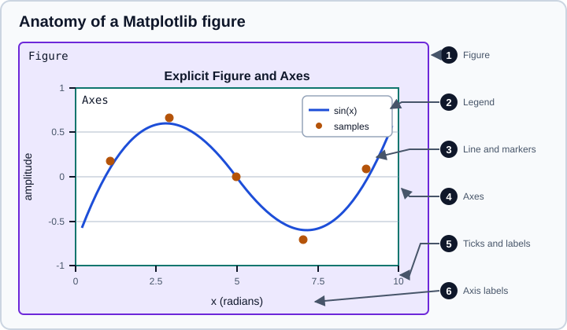

Data Visualization
|
This content was generated with the assistance of AI and should be verified against the official documentation before being relied on in production. |
Examples target Python 3.13 or 3.14 and were run on Python 3.13. This page targets Matplotlib 3.11, seaborn 0.13 and a current Plotly release, and it was checked in October 2026. Matplotlib 3.11 requires Python 3.11 or later, seaborn 0.13.2 (released in January 2024) is still the current seaborn release and is not deprecated, and every Python example below was run on Python 3.13, NumPy 2.5, pandas 3.1, Matplotlib 3.11.2, seaborn 0.13.2 and Plotly 7.1. The two plots that load a sample data set (penguins, from seaborn) need network access the first time because seaborn downloads the file.
A chart is an argument. It exists to answer one question about the data quickly and honestly, so the first decision is the question, the second is the chart type, and only then comes the library call. The page follows that order: how to choose, how Matplotlib models a figure (everything else in the Python ecosystem draws on it), how seaborn and pandas build on that model, how Plotly differs, and the pitfalls that make a correct-looking chart misleading.
The charts here pair with the Exploratory Data Analysis page, which says which plots to make first, and with the Data Cleaning & Preparation page, because a chart of unclean data mostly shows the cleaning problems. The R equivalent of the grammar-of-graphics approach is on ggplot2 and the Grammar of Graphics.
Choosing a chart
Choose from the relationship you want the reader to see, not from the menu of a library. The flowchart is a starting point, not a rule.
A few rules that hold in most situations:
-
Position on a common scale beats every other encoding. Readers compare positions along an axis more accurately than lengths, angles, areas or colours. That is why bars, dots and lines are the default, and why pie charts and bubble sizes are used sparingly.
-
Bars start at zero. The length of a bar encodes the value, so a truncated axis exaggerates differences. A line plot or a dot plot can use a non-zero baseline because it encodes position, not length.
-
Show the distribution, not only the mean. A bar of group means hides skew, outliers and bimodality. Box plots, violin plots, strip plots or the underlying points answer the question the summary cannot.
-
Fight overplotting. With thousands of points a scatter plot becomes a blob. Lower the marker opacity, shrink the markers, or aggregate with a 2-D histogram or hexbin.
-
Use small multiples instead of a crowded chart. A grid of panels that share axes lets the eye compare groups without a legend that has eleven colours.
-
Label directly and say what the numbers are. Axis labels carry the unit, the title states the finding, and the source is cited.
Matplotlib: the Figure and Axes model
Matplotlib is the foundation: pandas plotting, seaborn and many other libraries return or draw on Matplotlib objects. Its object model has three levels that you need to know by name.

Original drawing following the terminology of the Matplotlib "Parts of a Figure" guide.
-
A
Figure(marker 1) is the top-level container: the canvas, the size, the layout engine and the list of Axes. -
An
Axes(marker 4) is one plotting area with its own data coordinates. Despite the plural-looking name, it is a single plot. Most of the methods you call live here:plot,scatter,hist,set_xlabel,legend. -
Every visible element is an
Artist: lines and markers (marker 3), the legend (marker 2), ticks and tick labels (marker 5), and the axis labels and title (marker 6). -
An
Axis(the x axis or the y axis) is a separate object from theAxesthat owns it. It controls ticks, tick labels and the scale (linear, log).
The explicit interface and the pyplot interface
Matplotlib has two ways of driving this model, and the official guide recommends the explicit one for anything beyond a quick plot.
-
Explicit (object-oriented) interface: create the
Figureand theAxesyourself withplt.subplots()and call methods on those objects. Nothing depends on hidden global state, so the code is safe in functions, libraries, tests and notebooks with many cells. -
pyplot interface: call functions such as
plt.plot(...)andplt.title(...)that act on a "current" figure and "current" Axes tracked in a global registry. It is convenient interactively and it is what most older tutorials show.
The page teaches the explicit interface first because a function that draws on whichever figure happened to be current in an earlier cell is a common source of charts that land on the wrong plot or accumulate lines between runs.
import matplotlib
matplotlib.use("Agg") # a non-interactive backend, so the script runs without a display
import matplotlib.pyplot as plt
import numpy as np
rng = np.random.default_rng(42)
x = np.linspace(0, 10, 200)
y = np.sin(x) + rng.normal(scale=0.1, size=x.size)
fig, ax = plt.subplots(figsize=(6, 3.5), layout="constrained")
ax.plot(x, np.sin(x), label="sin(x)", color="tab:blue")
ax.scatter(x[::10], y[::10], s=18, color="tab:orange", label="noisy samples")
ax.set_xlabel("x (radians)")
ax.set_ylabel("amplitude")
ax.set_title("Explicit Figure and Axes")
ax.legend()
fig.savefig("sine.svg")
print(type(fig).__name__, type(ax).__name__)
print(fig.get_size_inches(), len(ax.lines), len(ax.collections))Output:
Figure Axes [6. 3.5] 1 1
Source: Matplotlib: Quick start guide
plt.subplots() is the one pyplot function the explicit style still uses, because it creates the figure and registers it with the active backend. layout="constrained" asks Matplotlib to resize and move the Axes so labels and titles do not overlap, which replaces most manual tight_layout() calls and subplots_adjust tuning.
Layouts with several Axes
plt.subplots(nrows, ncols) returns an array of Axes. When the grid is irregular, plt.subplot_mosaic takes a nested list of names and returns a dictionary, so the code refers to panels by meaning instead of by position.
import matplotlib
matplotlib.use("Agg")
import matplotlib.pyplot as plt
import numpy as np
rng = np.random.default_rng(0)
data = rng.normal(loc=50, scale=10, size=500)
fig, axs = plt.subplot_mosaic(
[["hist", "box"], ["hist", "ecdf"]],
figsize=(8, 5),
layout="constrained",
width_ratios=[2, 1],
)
axs["hist"].hist(data, bins=30, color="tab:blue", edgecolor="white")
axs["hist"].set_title("Histogram")
axs["box"].boxplot(data, orientation="horizontal")
axs["box"].set_title("Box plot")
xs = np.sort(data)
axs["ecdf"].step(xs, np.arange(1, xs.size + 1) / xs.size, where="post")
axs["ecdf"].set_title("Empirical CDF")
fig.savefig("mosaic.png", dpi=150)
print(sorted(axs))Output:
['box', 'ecdf', 'hist']
The vert=False argument that many tutorials use for a horizontal box plot was deprecated in Matplotlib 3.11 in favour of orientation="horizontal", and the deprecation warning says it will be removed in 3.13. New code should use orientation.
Figure sizes, resolution and output formats
-
figsizeis in inches anddpiis dots per inch, so the pixel size of a raster file isfigsize * dpi. Vector formats (SVG, PDF) ignoredpifor the drawing and are the right choice for reports and web pages where text must stay sharp. -
fig.savefig("name.png", dpi=150, bbox_inches="tight")writes the file.bbox_inches="tight"crops outer whitespace, which matters for figures that go into a document. -
The backend decides where a figure is drawn. In a notebook the inline or widget backend displays it; in a script on a server,
matplotlib.use("Agg")or theMPLBACKEND=Aggenvironment variable avoids needing a display. -
In a long-running process, close figures you no longer need with
plt.close(fig). The pyplot registry keeps every figure created throughplt.subplots()alive, and Matplotlib warns after 20 open figures.
Three-dimensional axes
A three-dimensional plot is an Axes3D, created by passing projection="3d" when adding the subplot. The older form fig.gca(projection="3d") was removed in Matplotlib 3.6, because gca no longer accepts keyword arguments.
import matplotlib
matplotlib.use("Agg")
import matplotlib.pyplot as plt
import numpy as np
x = np.linspace(-3, 3, 60)
X, Y = np.meshgrid(x, x)
Z = np.exp(-(X**2 + Y**2))
fig = plt.figure(figsize=(5, 4))
ax = fig.add_subplot(projection="3d")
ax.plot_surface(X, Y, Z, cmap="viridis")
print(ax.name)
try:
fig.gca(projection="3d")
except TypeError as exc:
print("TypeError:", exc)Output:
3d TypeError: FigureBase.gca() got an unexpected keyword argument 'projection'
A 3-D surface is rarely the best chart, because the perspective hides values behind peaks. A heat map or a contour plot of the same grid is usually easier to read.
Styles and defaults
Matplotlib reads its defaults from rcParams. Change them for a block with plt.style.context(...) or matplotlib.rc_context(...), and for a whole session with a style sheet (plt.style.use("...")) or a matplotlibrc file. plt.style.available lists the bundled style sheets. The seaborn styles are available under the seaborn-v0_8-... names, for example seaborn-v0_8-colorblind, because the original names changed when Matplotlib 3.6 deprecated the old unversioned ones.
Colour and accessibility
Colour is an encoding, so choose it by the kind of variable.
-
Categorical variables need distinct, unordered colours. Keep to about eight at most, and add a second cue (marker shape, line style, direct labels) when the chart must survive greyscale printing or colour-vision deficiency.
-
Sequential variables (low to high) need a map that varies monotonically in lightness. Matplotlib’s default map has been
viridissince 2.0: it is perceptually uniform, readable in greyscale and usable with the common forms of colour-blindness. -
Diverging variables (a meaningful midpoint such as zero) need two hues that meet at a neutral colour, with the midpoint centred. Seaborn’s
vlagand Matplotlib’sRdBuorcoolwarmare typical choices.
Avoid rainbow maps such as jet for continuous data. Their lightness is not monotonic, so equal steps in the data look like unequal steps, and bright bands appear that are not in the data.
import matplotlib as mpl
import matplotlib.pyplot as plt
import numpy as np
print(mpl.rcParams["image.cmap"])
print([s for s in plt.style.available if "colorblind" in s])
with plt.style.context("seaborn-v0_8-colorblind"):
print(mpl.rcParams["axes.prop_cycle"].by_key()["color"][:3])
data = np.random.default_rng(1).normal(size=(10, 10))
fig, ax = plt.subplots()
im = ax.imshow(data, cmap="viridis")
fig.colorbar(im, ax=ax, label="value")
cm = mpl.colormaps["viridis"]
print(cm(0.0), cm(1.0))Output:
viridis ['seaborn-v0_8-colorblind', 'tableau-colorblind10'] ['#0072B2', '#009E73', '#D55E00'] (np.float64(0.267004), np.float64(0.004874), np.float64(0.329415), np.float64(1.0)) (np.float64(0.993248), np.float64(0.906157), np.float64(0.143936), np.float64(1.0))
Accessibility goes beyond colour:
-
Check contrast between text and background and use a font size that is readable when the figure is scaled into a document (10 to 12 points after scaling).
-
Give every figure alt text or a caption that states the finding, and provide the data table where the exact values matter.
-
Do not rely on a legend far from the data when direct labels would do.
pandas plotting
DataFrame.plot and Series.plot are thin wrappers around Matplotlib that take the index as the x axis by default and return an Axes, so everything above still applies afterwards. The kind argument, or the accessor methods (df.plot.bar(), df.plot.hist()), choose the chart.
import matplotlib
matplotlib.use("Agg")
import numpy as np
import pandas as pd
rng = np.random.default_rng(3)
df = pd.DataFrame({
"month": pd.date_range("2025-01-01", periods=12, freq="MS"),
"sales": rng.integers(80, 140, 12),
"returns": rng.integers(5, 20, 12),
})
ax = df.plot(x="month", y=["sales", "returns"], kind="line", figsize=(6, 3), marker="o")
print(type(ax).__name__)
ax2 = df.plot.bar(x="month", y="sales", legend=False)
print(type(ax2).__name__)Output:
Axes Axes
Source: pandas: Chart visualization
The full set of pandas chart kinds is on Charts in the pandas section. Pass ax= to draw several pandas plots on the same Axes, and call ax.set_xlabel(...) and friends on the returned object to finish the chart.
seaborn
seaborn is a statistical visualisation library on top of Matplotlib. It takes tidy (long-format) data frames, maps columns to visual properties, and computes the aggregates and estimates for you (histograms, kernel density estimates, regression fits, confidence intervals). Call sns.set_theme() once to apply its default style and palette.
Axes-level and figure-level functions
The most important idea in seaborn is the split between two kinds of plotting functions, and it explains why some seaborn calls accept ax= and others do not.
| Kind | Examples | What it does | Returns |
|---|---|---|---|
Axes-level |
|
Draws on one Matplotlib |
The |
Figure-level |
|
Creates its own figure and can split the data over a grid of panels with |
A |
The figure-level functions are wrappers around families of axes-level functions: relplot chooses scatterplot or lineplot through kind=, displot chooses histplot, kdeplot or ecdfplot, and catplot chooses among the categorical plots.
import matplotlib
matplotlib.use("Agg")
import matplotlib.pyplot as plt
import seaborn as sns
sns.set_theme(style="whitegrid")
penguins = sns.load_dataset("penguins")
# Axes-level: draws on one Axes and returns it
fig, ax = plt.subplots(figsize=(6, 4), layout="constrained")
result = sns.scatterplot(data=penguins, x="bill_length_mm", y="flipper_length_mm",
hue="species", ax=ax)
print(type(result).__name__, result is ax)
# Figure-level: owns the figure and returns a FacetGrid
g = sns.relplot(data=penguins, x="bill_length_mm", y="flipper_length_mm",
hue="species", col="island", height=3, aspect=1)
print(type(g).__name__, g.axes.shape)
g.savefig("relplot.png")
# Distribution and categorical figure-level functions
d = sns.displot(data=penguins, x="body_mass_g", hue="sex", kind="kde", fill=True)
c = sns.catplot(data=penguins, x="species", y="body_mass_g", kind="box")
print(type(d).__name__, type(c).__name__)
# Correlation heatmap of the numeric columns
corr = penguins.select_dtypes("number").corr()
fig2, ax2 = plt.subplots()
sns.heatmap(corr, annot=True, fmt=".2f", cmap="vlag", center=0, ax=ax2)
print(corr.round(2).iloc[0].to_dict())Output:
Axes True
FacetGrid (1, 3)
FacetGrid FacetGrid
{'bill_length_mm': 1.0, 'bill_depth_mm': -0.24, 'flipper_length_mm': 0.66, 'body_mass_g': 0.6}
Two practical consequences. First, a seaborn call that the documentation lists as figure-level returns a grid object, so customise it through the grid (g.set_axis_labels(...), g.set_titles(...), g.figure) rather than with plt.title. Second, the hue, size and style arguments add information in the same panel, while col and row split it across panels. Prefer col over a ten-colour hue.
The estimators that seaborn computes are visible in the arguments: errorbar=("ci", 95) or errorbar="sd" for the interval drawn around an aggregate, stat="density" or stat="probability" for histograms, common_norm=False to normalise each group on its own. State which one you used in the caption.
seaborn.objects
The seaborn.objects interface, introduced in 0.12, is a declarative, grammar-of-graphics style API. You create a Plot that maps data to properties, then add layers made of a Mark (what to draw), an optional Stat (what to compute) and optional Move (how to adjust positions). Constants such as a fixed opacity belong to the mark, while keyword arguments of Plot.add are mappings from data variables.
import matplotlib
matplotlib.use("Agg")
import seaborn as sns
import seaborn.objects as so
penguins = sns.load_dataset("penguins")
p = (
so.Plot(penguins, x="bill_length_mm", y="flipper_length_mm", color="species")
.add(so.Dot(alpha=0.6))
.add(so.Line(), so.PolyFit(order=1))
.label(x="Bill length (mm)", y="Flipper length (mm)")
)
p.save("objects.png")
print(type(p).__name__)Output:
Plot
A common mistake is to write .add(so.Dot(), alpha=0.6). A scalar passed to add is interpreted as a data variable and fails with the pandas error "If using all scalar values, you must pass an index". Set alpha on the mark, as above. The objects interface is younger than the classic functions and has fewer features, so pin the seaborn version when you rely on it.
Plotly
Plotly produces interactive charts (hover, zoom, pan, legend toggling) that render as HTML and JavaScript in a notebook or a web page. plotly.express is the high-level API: one function per chart type, taking a data frame and column names, much like seaborn’s figure-level functions, and returning a plotly.graph_objects.Figure that you can modify further.
import plotly.express as px
df = px.data.gapminder().query("year == 2007")
fig = px.scatter(df, x="gdpPercap", y="lifeExp", size="pop", color="continent",
hover_name="country", log_x=True, size_max=45,
title="Life expectancy vs GDP per capita, 2007")
fig.update_layout(legend_title_text="Continent")
fig.write_html("gapminder.html", include_plotlyjs="cdn")
print(type(fig).__name__, len(fig.data), [t.name for t in fig.data])Output (the continents appear in the order of the data):
Figure 5 ['Asia', 'Europe', 'Africa', 'Americas', 'Oceania']
Source: Plotly: Plotly Express in Python
Install it with pip install plotly. A few points to decide between Plotly and Matplotlib or seaborn:
-
Interactivity helps exploration and dashboards but does not survive a printed or PDF report. For those, export a static image (this needs the separate Kaleido package) or use Matplotlib.
-
write_html(..., include_plotlyjs="cdn")keeps the file small and loads the JavaScript library from a content delivery network, so the page needs network access; the default embeds the library (several megabytes) and works offline. -
Charts with hundreds of thousands of points are slow in the browser. Aggregate first, or use the WebGL traces such as
scatterwithrender_mode="webgl". The WebGL sub-section of Graphics & Games explains how WebGL draws.
Where older tutorials are outdated
| Older statement | Current state (October 2026) |
|---|---|
|
Removed in Matplotlib 3.6. Use |
|
|
|
Works, but the explicit |
Use |
The default has been |
|
|
|
The seaborn style sheets are versioned: |
Pandas |
pandas 3 uses |
Common pitfalls
-
Plotting before cleaning. Missing values, sentinel codes such as -999, duplicated rows and wrong dtypes produce charts that look wrong in ways that are really data problems. Check
df.info()anddf.describe()first. -
Wide versus long data. seaborn and Plotly Express work best with tidy long data (one row per observation, one column per variable). Convert a wide table with
DataFrame.meltbeforehue=orcol=can use its columns. -
Dual y axes. Two vertical scales on one chart let the author make any two series appear correlated by choosing the scales. Prefer two panels that share the x axis.
-
Unlabelled log scales and transformed data. Say when an axis is logarithmic, and note that zero or negative values cannot be shown on one.
-
Mixing state and objects. Calling
plt.title(...)after creating several Axes titles only the last-created one. Hold on to theaxand callax.set_title(...). -
Hiding the sample size. Annotate group sizes when groups differ greatly, and show uncertainty intervals rather than bare means.
-
Chart junk and 3-D effects. Remove gridlines, borders and effects that do not carry information.